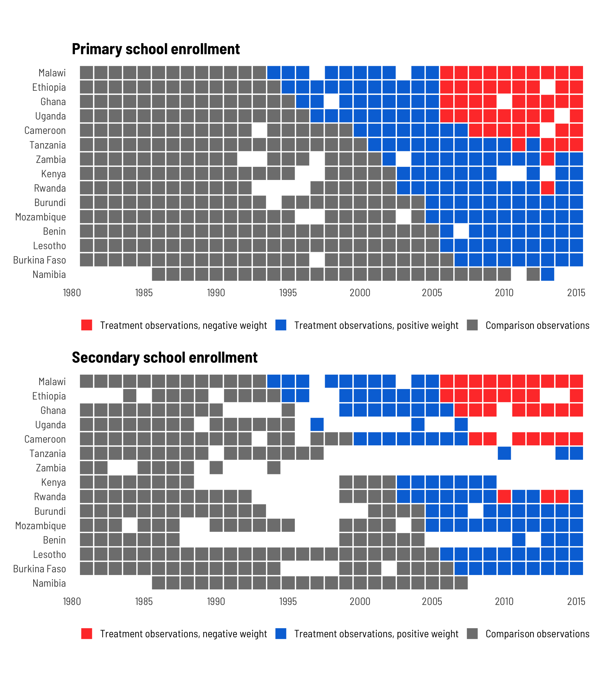
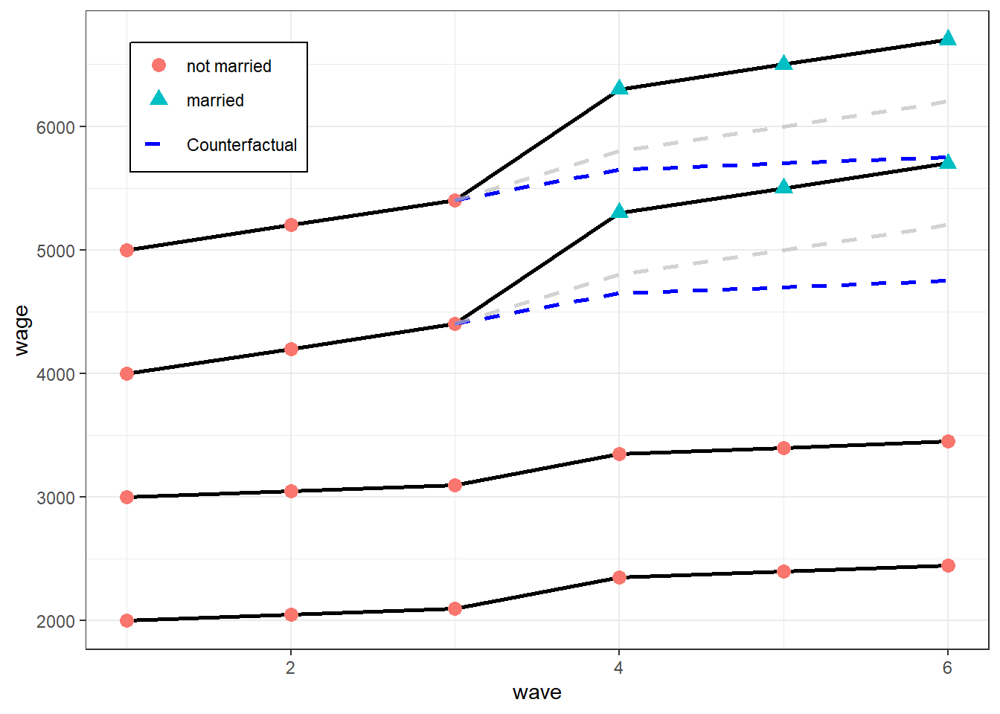

Fixed Effects
Misc

- Model with independent intercepts for each time point and/or case, which are called “fixed effects”
- The effects the omitted variables have on the subject at one time, they will also have the same effect at a later time; hence their effects will be constant, or “fixed.”
- A “fixed effect” in statistics is a non-random regression term, while a “fixed effect” in econometrics means that the coefficients in a regression model are time-invariant
- Notes from
- Packages
- {plm}
- Functions for model estimation, testing, robust covariance matrix estimation, panel data manipulation and information.
- {fixest}
- Fast estimation, has parallel option, glm option and many other features
- {estimatr}
- Providing a range of commonly-used linear estimators, designed for speed and for ease-of-use. Users can easily recover robust, cluster-robust, and other design appropriate estimates.
- Users can choose an estimator to reflect cluster-randomized, block-randomized, and block-and-cluster-randomized designs.
- {plm}
- If you used {plm} + {coeftest} and want stata errors, then
vcov = vcovCL
Terms
- Coarse Clustering - Grouping the data into larger clusters or units. Each cluster represents a broader and more aggregated subset of observations (as compared to Fine Clustering).
- Can lead to lower variance in the estimated standard errors because it captures less of the within-cluster variation.
- May be used when there is less within-cluster heteroscedasticity or correlation, or when computational efficiency is a concern.
- Fine Clustering - Grouping the data into small clusters or units. Each cluster represents a relatively small and specific subset of observations in the dataset.
- Can lead to higher variance in the estimated standard errors because it captures more of the within-cluster variation.
- Appropriate when there is a substantial degree of heteroscedasticity or correlation within these small clusters.
- Fixed Panel - When the same set of units/people/cases is tracked throughout the study
- Homogeneous (or Pooled) - Panel data models that assume the model parameters are common across individuals.
- Heterogeneous - Panel models allow for any or all of the model parameters to vary across individuals.
- Fixed effects and random effects models are both examples of heterogeneous panel data models.
- Rotating Panel - When the units/people/cases change during the study
Considerations
- Fixed Effects or Random Effects (aka mixed effects model)?
- If there’s likely correlation between unobserved group/cases variables (e.g. individual talent) and treatment variable (i.e. E(α|x) != 0) AND there’s substantial variance between group units, then FE is a better choice (see 1-way assumptions or Econometrics, Mixed Effects, Frequentist >> Assumptions for more details)
- If cases units change little, or not at all, across time, a fixed effects model may not work very well or even at all (SEs for a FE model will be large)
- The FE model is for analyzing within-units variance
- Do we wish to estimate the effects of variables whose values do not change across time, or do we merely wish to control for them?
- FE: these effects aren’t estimated but adjusted for by explicitly including a separate intercept term for each individual (αi) in the regression equation
- RE: estimates these effects (might be biased if RE assumptions violated)
- The RE model is for analyzing between-units variance
- The amount of within-unit variation relative to between-unit variation has important implications for these two approaches
- Article with simulated data showed that within variation around sd < 0.5 didn’t detect the effect of explanatory variable but ymmv (depends on # of units, observations per unit, N)
- Durbin–Wu–Hausman test (plm::phtest)
- If H0 is not rejected, then both FE and RE are consistent but only RE is efficient. –> use RE but if you have a lot of data, then FE is also fine.
- If H0 is rejected, then only FE is consistent –> use FE
- Valid research questions for using a fixed effect for:
- Cases/Units (e.g. State, school, individuals, stores) - “How much does a case unit change relative to other case units?”
- Time (e.g. Year) - “How much does a case change in relation to itself over time?”
- How much each case varies around its average. The larger this coefficient the more cases fluctuate in their outcomes
- Example: Survey data with individual incomes over time
- How the measure is different in a particular year compared to the individual average (e.g., do they have a lower or higher income compared to their normal income).
- Examples
- Whether obtaining more education leads to higher earnings.
- Whether wealthier countries tend to be more democratic than poorer countries
- Fixed Effects or First Difference Estimator (FD)?
- Taking the first difference is an alternative to the demeaning step in the FE model
- If the error terms are homoskedastic with no serial correlation, the fixed effects estimator is more efficient than the first difference estimator.
- If the error follows a random walk, however, the first difference estimator is more efficient. If T=2, then they are numerically equivalent, and for T > 2, they are not.
- Is the panel data balanced?
plm::is.pbalanced(<data>, index = c("<id_var>", "<time_var>"))- Balanced - Has the same number of observations for all groups/units at each time point
- Unbalanced - At least one group/unit is not observed every period
- e.g. Have missing values at some time observations for some of the groups/units.
- Certain panel data models are only valid for balanced datasets.
- For such models, data will need to be condensed to include only the consecutive periods for which there are observations for all individuals in the cross section.
- Omitted variable bias
- Multiple regression can correct for observable omitted variable bias, however, this cannot account for omitted unobservable factors that differ (e.g. from state to state)
- This refers to doing two multivariable regression models - one for each time period
- FE models control for any omitted variables that are constant over time but vary between individuals by explicitly including a separate intercept term for each individual (\(\alpha_i\)) in the regression equation
- You can difference the outcome and difference predictor variables from period 1 to period 2 in order to remove the effects of unobserved omitted variables that are constant between the time periods
- From Kubinec differs regarding omitted variables
- Any statistical model should have, as its first requirement, that it match the researcher’s question. Problems of omitted variables are important, but necessarily secondary.
- Fixed effects models do not control for omitted variables. What fixed effect models do is isolate one dimension of variance in the model. As a result, any variables that don’t vary on that dimension are by definition removed from the model. This side-effect is trumpeted as the great inferential benefit of fixed effect models, but it has nothing to do with inference. Fixed effects (or their cousin, random effects/hierarchical models) are simply about selecting which part of the panel dataset is most germane to the analysis.
- Multiple regression can correct for observable omitted variable bias, however, this cannot account for omitted unobservable factors that differ (e.g. from state to state)
Pitfalls
- Bickel: If you performed matching on your sample, don’t condition on any of the matching variables
- Can result in collider bias and opening up a previously closed backdoor
- Me: Matching makes sense because FE model has “Common Trends” assumption
- Kubinec says
- 2-way fixed models have big problems
- Slope Interpretation
- Cases and time points are nested and we end up making comparisons across both dimensions simultaneously. There is no clear research question that matches this model.
- The one known use of the model is for difference-in-difference estimation, but only with two time points. Says to read his paper for more details.
- Is this what the eor book is describing for unobserved omitted variables? (see above)
- Slope Value Unreliable
- Only identifiable if there’s a different effect of x on y for each time point/case
- I think he’s saying if there is no variation in one of your fixed effects and you fit a two-way model anyways, the calculated effect is unreliable. He says the data looks normal and you wouldn’t recognize what happened necessarily.
- When this model is unidentifiable, R fixes the problem by deleting the last dummy variable (created by factor(fixed_effect_var)) and spits out the estimate.
- The coefficient estimate for the removed dummy variable shows-up as an NA in the summary
- Only identifiable if there’s a different effect of x on y for each time point/case
- Slope Interpretation
- It’s best to choose whether within-case or between-case effect is more important and fit the 1-way model.
- i.e. It is important to think about which dimension is more relevant, and then go with that dimension.
- Assumptions for a model with just an cases fixed effect
- Residuals have mean = 0 (i.e. errors uncorrelated with X)
- if violated, then omitted variable bias
- X (variable of interest) is i.i.d
- within-cases, autocorrelation is allowed (e.g. states)
- large outliers unlikely
- no perfect multicollinearity between variables
- Residuals have mean = 0 (i.e. errors uncorrelated with X)
- 2-way fixed models have big problems
- Potential danger of biased effects when treatment is assigned during different periods for each group
- Example: group 1 is untreated at periods 1 and 2 and treated at period 3, while group 2 is untreated at period 1 and treated both at periods 2 and 3
- When the treatment effect is constant across groups and over time, FE regressions estimate that effect under the standard “common trends” assumption.
- Requires that the expectation of the outcome without treatment follow the same evolution over time in every group
- Estimates can be severely biased – and may even be incorrectly signed – when treatment effects change over time within treated units (aka hetergeneous treatment effects)
- Fundamentally, the main reason TWFE estimates get weird and biased with differently-timed treatments is because of issues with weights—in TWFE settings, treated observations often get negative weights and vice versa
- According to Jakiela (2021, 5), negative weights in treated observations are more likely in (1) early adopter countries, since the country-level treatment mean is high, and (2) later years, since the year-level treatment mean is higher.
- So, in general, the bias comes from entity variable categories that received the treatment early and the biased weight estimates occur on observations with later time values. This is because of the extreme treatment imbalance during these ranges/intervals, and its effect on the outcome variable.
- Having negative weights on treated observations isn’t necessarily bad! It’s often just a mathematical artefact, and if you have (1) enough never-treated observations and (2) enough pre-treatment data, and if (3) the treatment effects are homogenous across all countries, it won’t be a problem. But if you don’t have enough data, your results will be biased and distorted for later years and for early adopters.
- Diagnostics
- Do any treated units get negative weight when calculating βTWFE? Check this by looking at the weights
- Can we reject the hypothesis that the treatment effects are homogenous? Check this by looking at the relationship between Yit and Dit. The slope shouldn’t be different.
- treatment effect homogeneity implies a linear relationship between residualized outcomes and residualized treatment after removing the fixed effects
- Comments
- She states that she’s only looking for linearity between the two sets of residuals, but actually breaks it down further by checking whether the relationship varies by treatment. This whole procedure is computing a partial correlation except instead of the last step of measuring the correlation between the two sets of residuals (e.g.
cor.test(treatment_resid, out_resid)and getting the p-value, she looks at an interaction. - I don’t understand the homogeneity check in 3.2 though. She says that if the linearity relationship varies by treatment then this breaks assumptions for TWFE models. I’ve only looked at her paper and the Chaisemartin paper, and the only assumptions I saw for TWFE models in general was the “common trends” and the “strong exogeneity” assumption. I think this is more likely to be about the “common trends” assumption, and my understanding of that one is that it pertains to the effect across time for a particular group. I’m guessing there’s a connection between those two concepts, but I’m not seeing it.
- She states that she’s only looking for linearity between the two sets of residuals, but actually breaks it down further by checking whether the relationship varies by treatment. This whole procedure is computing a partial correlation except instead of the last step of measuring the correlation between the two sets of residuals (e.g.
Clusters
- Misc
- Notes from Cluster-robust inference: A guide to empirical practice (Paper)
- Sections: 4.2 (level of clustering), 4.3 (level of clustering), 4.3.2 (influential clusters), 8.1 (infl clusters), 8.2 (placebo regression)
- Also see Econometrics, General >> Standard Errors >> HC and HAC vcov estimators
- Notes from Cluster-robust inference: A guide to empirical practice (Paper)
- Cluster-Robust Variance Estimators (CRVE)
- “Random-effects model is the only model within the class of factor models for which including cluster fixed effects can remove all intra-cluster dependence”
- Think this says that HC or HAC ({sandwich}) should be used for 2FE but not RE models
- “Even very small intra-cluster correlations can have a large effect on standard errors when the clusters are large”
- “It has become quite standard in modern empirical practice both to include cluster fixed effects (and perhaps other fixed effects as well) and also to employ cluster-robust inference.”
- “Random-effects model is the only model within the class of factor models for which including cluster fixed effects can remove all intra-cluster dependence”
- Level of Clustering
- “one or more fine clusters nested within each of the coarse clusters”
- “Clustering at too fine a level generally leads to serious over-rejection, which becomes worse as the sample size increases with the numbers of clusters at all levels held constant”
- “Clustering at too coarse a level also leads to both some over-rejection and some loss of power, especially when the number of clusters is small.”
- Issues for Certain Rules of Thumb
- Just cluster at the coarsest feasible level
- May be attractive when the number of coarse clusters G is reasonably large, but it can be dangerous when G is small, or when the clusters are heterogeneous in size or other features
- Cluster at whatever level yields the largest standard error(s) for the coefficient(s) of interest
- Will often lead to the same outcome as the first one, but not always. When the number of clusters, G, is small, cluster-robust standard errors tend to be too small, sometimes much too small. Hence, the second rule of thumb is considerably less likely to lead to severe over-rejection than the first one. However, because it is conservative, it can lead to loss of power (or, equivalently, confidence intervals that are unnecessarily long).
- Just cluster at the coarsest feasible level
- Recommended: Cluster at the treatment level
- e.g. If the treatment is assigned by classroom then cluster by classroom
- But if there’s concern of significant spillover effects, then cluster at a coarser level than the treatment level (e.g. schools)
- Diagnostics
- Statistical testing for the correct level of clustering
- Hard to tell but I don’t think any of the tests were recommended in the paper
- Checking for influential clusters
- Influential Cluster - Estimates change a lot when it’s deleted.
- “In a few extreme cases, there may be a cluster \(h\) for which it is impossible to compute \(β_j^{(h)}\). If so, then the original estimates should probably not be believed.
- This will happen, for example, when cluster \(h\) is the only treated one. Inference is extremely unreliable in that case.”
- Placebo Regressions
- Process
- Add a random dummy variable to the model
- fit model check if dummy variable is significant
- repeat many times
- Because a placebo regressor is artificial, we would expect valid significance tests at level α to reject the null close to α% of the time when the experiment is repeated many times.
- Example:
- Clustering at levels below state-level leads to rejection rates far greater than α
- Using a state-level CRVE is important for survey data that samples individuals from multiple states. If we fail to do so, we will find, with probability much higher than α, that nonsense regressors apparently belong in the model.
- i.e. placebo regressors are significant > 5% of the time
- A placebo-regressor experiment should lead to over-rejection whenever both the regressor and the residuals display intra-cluster correlation at a coarser level than the one at which the standard errors are clustered. (e.g. < 5%)
- If the placebo regressor is clustered at the coarse level, we would expect significance tests based on heteroskedasticity-robust standard errors to over-reject whenever the residuals are clustered at either level. Similarly, we would expect significance tests based on finely-clustered standard errors to over-reject whenever the residuals are clustered at the coarse level. Table 4 in Section 8.2 displays both of these phenomena.
- Process
- Statistical testing for the correct level of clustering
One-Way Fixed Effects
Only compares different periods within the same cases category and discards the between-cases variance Steps
Steps
- Remove endogeneity (resulting from omitted variable bias)
First, the error is broken into 2 parts
\[ \begin{align} &y_{it} = \beta x_{it}+ \nu_{it} \\ &\text{where}\: \nu_{it} = \alpha_i + \epsilon_{it} = 0 \end{align} \]
- \(\alpha\) is the cases/units-specific or between part of the error
- unit-specific heterogeneity, the error component that is constant over time
- It’s the unit fixed effect, the unit-specific intercept.
- \(\epsilon\) is time-varying or within part of the error
- Idiosyncratic, varying both over units and over time
- \(\alpha\) is the cases/units-specific or between part of the error
Then, each group (aka cases) is centered by each group’s mean
\[ \begin{align} y_{it}-\bar y_i &= \beta(x_{it} - \bar x_i) + (\alpha_i - \alpha_i) + (\epsilon_{it} - \bar \epsilon_i) \\ \tilde y_{it} &= \beta \tilde x_{it} + \tilde \epsilon_{it} \end{align} \]
- The centering eliminates all between-group variance, including the person-specific part of the error term (\(\alpha_i\)), and leaves only the within-group variability to analyze
- \(\alpha_i\) is a constant so it’s mean is equal to itself
- The centering eliminates all between-group variance, including the person-specific part of the error term (\(\alpha_i\)), and leaves only the within-group variability to analyze
- OLS is performed after the endogeneity is removed.
- Remove endogeneity (resulting from omitted variable bias)
Assumptions
- Functional Form
- Additive fixed effect
- Constant and contemporaneous treatment effect (aka homogeneous treatment effects)
- Linearity in covariates
- Time-constant unobserved heterogeneity is allowed (not the case for Mixed Effects models)
- i.e. \(\mathbb{E}(\alpha|x) \neq 0\) or correlation between unobserved unit variables that are constant across time and \(x\) is allowed
- This correlation is seen in the figure at the top of section
- Each group’s \(x\) values get larger from left to right as each group’s \(\alpha\) (aka \(y\)-intercepts) for each unit get larger time-constant, unobserved variablesexplain variation between cases units
- This correlation is seen in the figure at the top of section
- i.e. \(\mathbb{E}(\alpha|x) \neq 0\) or correlation between unobserved unit variables that are constant across time and \(x\) is allowed
- Strong (strict) Exogeneity
- \(\mathbb{E}(\epsilon|x,\alpha)=0\)
- Time-varying unobserved heterogeneity biases the estimator
- Also see Pitfalls >> Kubinec
- Functional Form
Example
e2 <- plm(wage ~ marriage, data = df2, index = c("id", "wave"), effect = "individual", model = "within")- Where marriage is the variable of interest, id is the cases variable and wave is the time variable
- Using effect = “individual”, model = “within” specifies a one-way fixed effects model
Two-Way Fixed Effects (TWFE)
Adds a time variable that is constant (fixed effect) across cases but varies over time
\[ y_{it} = \beta x_{it} + \alpha_i + \zeta_t + \epsilon_{it} \]
- Where \(\zeta\) is the time fixed effect
Steps
- Remove endogeneity (resulting from omitted variable bias)
First, the error is broken into 2 parts: \(\nu_{it} = \alpha_i + \epsilon_{it} = 0\)
- Where \(\alpha\) is the cases-specific or between part of the error and \(\epsilon\) is time-varying or within part of the error
Then,
\[ (y_{it} - \bar y_i -\bar y_t + \bar y) = \beta(x_{it} - \bar x_i - \bar x_t + \bar x) +(\epsilon_{it} = \bar \epsilon_i - \bar \epsilon_t + \bar \epsilon) \]
- For each group/case, variables are centered by that group’s mean
- For each period, variables are centered by that time period’s mean
- The grand mean is added back
- OLS is performed after the endogeneity is removed.
- Remove endogeneity (resulting from omitted variable bias)
Assumptions
- Time-constant unobserved heterogeneity is allowed (See 1-way FE assumptions)
- Functional Form
- Additive fixed effect
- Constant and contemporaneous treatment effect
- Linearity in covariates
- Strong (strict) Exogeneity (also see 1-way FE assumptions)
\(ε \perp D_{is}, X_{i}, \alpha_i, \zeta_t\)
- This implies the below statement
Treatment assignment, \(D_i\), for a given unit, \(i\), in time, \(s\), is independent of the potential outcomes for that unit in that time period
\[ {Y_{it}(0), Y_{it}(1)} \perp D_{is}\;|\; \boldsymbol{X}_i^{1:T}, \alpha_i, \boldsymbol{f}^{1:T} \quad \quad \forall\; i, t, s \]
- e.g A policy (i.e. treatment) doesn’t get enacted in region because it experiences negative economic shocks and we’re measuring some economic metric
- As a result, if we only had observed outcomes (which of course is all we have), we can substitute either \(Y_{it}(0)\) or \(Y_{it}(1)\) depending on whether we observe \(D_{is}= 1\) or \(D_{is}= 0\) and we can still, at least theoretically, get an unbiased estimate of the treatment effect.
- \(D\) is the treatment variable so it’s \(x_{it}\) in the other equations above and here, \(X\) is probably other adjustment variables
- \(f\) is the time fixed effect
Implies treatment status is assigned randomly or at one shot, not sequentially
.png)
- Common Trends
- See Fixed Effects with Individual Slopes (FEIS) section for models that relax this assumption
- For \(t \geq 2, \mathbb{E}(Y_{g,t}(0) − Y_{g,t−1}(0))\) does not vary across group, \(g\)
- \(Y_{g,t}(0)\) denotes average potential outcomes without treatment in group \(g\) at period \(t\).
- \(Y_{g,t}(1)\) would denote average potential outcomes with treatment in group \(g\) at period \(t\).
- i.e. For each period after the first period, the expected change in outcome doesn’t vary across group \(g\)
- Example
- Before treatment (getting married), wages for the treatment group (top 2 lines) were growing at a substantially faster rate than the control group (bottom two lines). This violates the Common Trends assumption
Example:
fe3 <- plm(wage ~ marriage, data = df2, index = c("id", "wave"), effect = "twoways", model = "within")- Where marriage is the variable of interest, id is the cases variable and wave is the time variable
- Using effect = “twoways”, model = “within” specifies a two-way effects model
Example:
Model
\[ \begin{align} Y_{it} &= \beta_0 + \beta_1 X_{it} + \gamma_2 D2_i + \cdots + \gamma_n DT_i + \delta_2B2_t + \cdots + \delta_n BT_t + u_{it} \\ \text{FatilityRate}_{it} &= \beta_1 \text{BeerTax}_{it} + \text{StateEffects} + \text{TimeFixedEffect} + u_{it} \end{align} \]
- Including the intercept would allow for a change in the mean fatality rate in the time between the years 1982 and 1988 in the absence of a change in the beer tax.
- The variable of interest is Beer Tax and it’s effect on Fatality Rate
- Beer Tax is a continuous variable with a value for each unit and for each year
- The state and time fixed effects are the dummy variables in the formal equation
- Their coefficients start at 2 because the intercept coefficient is considered the first coefficient
Code
# Two ways to fit the model lm(fatal_rate ~ beertax + state + year - 1, data = Fatalities) fatal_tefe_mod <- plm::plm(fatal_rate ~ beertax, data = Fatalities, index = c("state", "year"), # fixed effects estimator is also called the 'within' estimator model = "within", effect = "twoways") # twoways required for "entities" and "time" fixed effects # only calcs for variable of interest # if needed, dof = nrow(dat) - 1 coeftest(fatal_tefe_mod, vcov = vcovHC, type = "HC1") #> t test of coefficients: #> #> Estimate Std. Error t value Pr(>|t|) #> beertax -0.63998 0.35015 -1.8277 0.06865 . # moar adjustment vars fatalities_mod6 <- plm::plm(fatal_rate ~ beertax + year + drinkage + punish + miles + unemp + log(income), index = c("state", "year"), model = "within", effect = "twoways", data = Fatalities)- state and year variables need to be factors
- Intercept removed because it has no meaning in this context
Example: {estimatr}
model_lm_robust <- estimatr::lm_robust(primary ~ treatment, fixed_effects = ~ country + year, data = fpe_primary, clusters = country, se_type = "stata") tidy(model_lm_robust) ## term estimate std.error statistic p.value conf.low conf.high df outcome ## 1 treatment 20.4 9.12 2.24 0.0418 0.867 40 14 primary glance(model_lm_robust) ## r.squared adj.r.squared statistic p.value df.residual nobs se_type ## 1 0.768 0.742 NA NA 14 490 stataExample: {fixest}
model_feols <- fixest::feols(primary ~ treatment | country + year, data = fpe_primary, cluster = ~ country, dof = dof(fixef.K = "full")) tidy(model_feols) ## # A tibble: 1 × 5 ## term estimate std.error statistic p.value ## <chr> <dbl> <dbl> <dbl> <dbl> ## 1 treatment 20.4 9.12 2.24 0.0418 glance(model_feols) ## # A tibble: 1 × 9 ## r.squared adj.r.squared within.r.squared pseudo.r.squared sigma nobs AIC BIC logLik ## <dbl> <dbl> <dbl> <dbl> <dbl> <int> <dbl> <dbl> <dbl> ## 1 0.768 0.742 0.111 NA 14.7 490 4071. 4280. -1985. # Standard print,summary output from a fixest model (from vignette) print(fixest_pois_mod) #> Poisson estimation, Dep. Var.: Euros #> Observations: 38,325 #> Fixed-effects: Origin: 15, Destination: 15, Product: 20, Year: 10 #> Standard-errors: Clustered (Origin) #> Estimate Std. Error t value Pr(>|t|) #> log(dist_km) -1.52787 0.115678 -13.208 < 2.2e-16 *** #> --- #> Signif. codes: 0 '***' 0.001 '**' 0.01 '*' 0.05 '.' 0.1 ' ' 1 #> Log-Likelihood: -7.025e+11 Adj. Pseudo R2: 0.764032 #> BIC: 1.405e+12 Squared Cor.: 0.612021 # With clustered SEs summary(fixest_pois_mod, vcov = "twoway") #> Poisson estimation, Dep. Var.: Euros #> Observations: 38,325 #> Fixed-effects: Origin: 15, Destination: 15, Product: 20, Year: 10 #> Standard-errors: Clustered (Origin & Destination) #> Estimate Std. Error t value Pr(>|t|) #> log(dist_km) -1.52787 0.130734 -11.6869 < 2.2e-16 *** #> --- #> Signif. codes: 0 '***' 0.001 '**' 0.01 '*' 0.05 '.' 0.1 ' ' 1 #> Log-Likelihood: -7.025e+11 Adj. Pseudo R2: 0.764032 #> BIC: 1.405e+12 Squared Cor.: 0.612021
Fixed Effects with Individual Slopes (FEIS)
Fixed effects model that relaxes the Common Trends assumption (see 2-way FE assumptions above)
- Gives each case (e.g. State, school, individual, store) it’s own intercept and slope
- Data are not cases “demeaned” like with a FE estimator, but “detrended” by the predicted individual slope of each cases unit
Misc
- Notes from https://ruettenauer.github.io/Panel-Data-Analysis/Panel_part2.html#Fixed_Effects_Individual_Slopes
- {feisr}
- ** Each additional slope variable requires more observations per cases category **
- Each cases unit needs at least q+1 observations to contribute to the model. If not, they are dropped.
- Where q number of slope parameters (including a constant)
- Most likely this refers to the number of slope variables + constant
- Example: Slope variables are
exp + I(exp^2)- q = number_of_slope_vars + constant = 2 + 1 = 3 observations for each unit are required.
- (Probably not this) Example (Based on the feisr vignette): Slope variables are
exp + I(exp^2)- q = number_of_cases_units * (number_of_slope_vars + constant)
- q = number_of_ids * 3
- This is the actual number of slope parameters estimated but this could be huge, so I doubt it’s this.
- Where q number of slope parameters (including a constant)
- Each cases unit needs at least q+1 observations to contribute to the model. If not, they are dropped.
Model Equation: \(y_i = \beta X_i + \alpha_i W_i + \epsilon_i\)
- \(W\) is a matrix of slope variables
- \(\alpha\) is a vector of estimated parameters for the slope variables
Process
- It’s equivalent to a typical
lmmodel except with dummies of your cases variable (e.g. “id” below) and 2-way interaction terms for all combinations of dummies \(\times\) each slope variable - Actual process (more efficient) (see article for more mathematical detail)
- Estimate the individual-specific predicted values for the dependent variable and each covariate based on an individual intercept and the additional slope variables of \(W_i\)
- Detrend the original data by these individual-specific predicted values
- Run an OLS model on the residual (‘detrended’) data
- It’s equivalent to a typical
Example: Does marrying increase (log) wages
wages.feis <- feis(lnw ~ marry + enrol + yeduc + as.factor(yeargr) | exp + I(exp^2), data = mwp, id = "id", robust = TRUE) summary(wages.feis) ## Coefficients: ## Estimate Std. Error t-value Pr(>|t|) ## marry 0.0134582 0.0292771 0.4597 0.64579 ## enrol -0.1181725 0.0235003 -5.0286 5.325e-07 *** ## yeduc -0.0020607 0.0175059 -0.1177 0.90630 ## as.factor(yeargr)2 -0.0464504 0.0378675 -1.2267 0.22008 ## as.factor(yeargr)3 -0.0189333 0.0524265 -0.3611 0.71803 ## as.factor(yeargr)4 -0.1361305 0.0615033 -2.2134 0.02697 * ## as.factor(yeargr)5 -0.1868589 0.0742904 -2.5152 0.01196 * ## --- ## Signif. codes: 0 '***' 0.001 '**' 0.01 '*' 0.05 '.' 0.1 ' ' 1 ## ## Cluster robust standard errors ## Slope parameters: exp, I(exp^2)- Experience (exp) is used for the slope variables.
- To estimate the slope parameters, the relationship with wage (lnw) is assumed to be non-linear (exp + I(exp^2))
- Interpretation: Marrying doesn’t reliably affect wages (p-value = 0.64579)